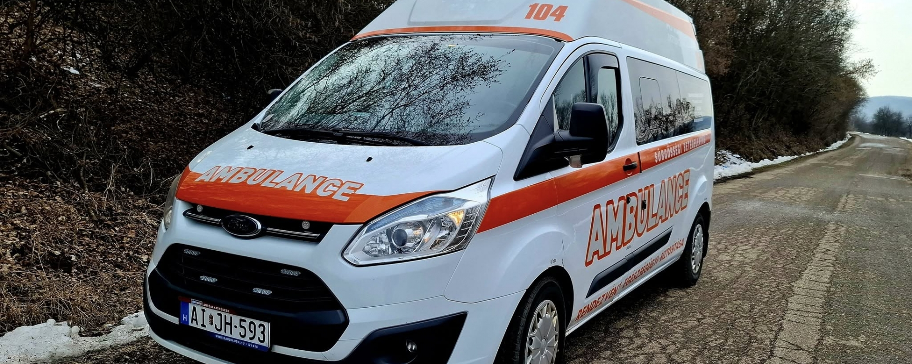

Biztonságos, tiszta és egyértelmű megoldások
Egészségügyi háttér, amelyre szervezőként és családként is számíthat.
A Drabon Med Egészségügyi Szolgáltató Kft. pontos, precíz és emberközpontú szolgáltatásokat nyújt rendezvényekhez, betegszállításhoz és elsősegély oktatáshoz.

Egyedi ajánlatadás
Rendezvényekre, betegszállításra és oktatásokra.
Kapcsolat
Segítünk kiválasztani a megfelelő szolgáltatási szintet.
Bemutatkozás
Tapasztalt támogatás döntési helyzetekben.
Üdvözli Önt a Drabon Med Egészségügyi Szolgáltató Kft. ügyvezető igazgatója, Drabon József. Szolgáltatásaink célja, hogy ügyfeleink számára megfelelő, pontos és precíz egészségügyi támogatást nyújtsunk.
Számos rendezvényszervező és magánszemély számára kérdés, hogy milyen szintű egészségügyi biztosításra van szükség. Mi ebben segítünk, hogy a megfelelő megoldás szülessen meg.
Folyamatos fejlesztéseket végzünk eszközparkunkon, hogy a lehető legkorszerűbb háttérrel tudjuk segíteni partnereinket és betegeinket.
Szolgáltatások
Tiszta szerkezet, jól elkülönített szolgáltatásokkal.
A második koncepció célja az, hogy a látogatók gyorsan megértsék, miben tud segíteni a Drabon Med, és hogyan tudnak továbblépni.
01
Rendezvénybiztosítás
Kisebb és nagyobb események egészségügyi biztosítása, a helyszín, a várható létszám és a rendezvény jellege alapján kiválasztott megfelelő egységgel.
02
Betegszállítás
Betegszállítás és őrzött betegszállítás korszerű felszereltséggel és felkészült munkatársakkal, egyedi megrendelés alapján.
03
Elsősegély oktatás
Iskolák, munkahelyek, táborok és más intézmények számára megszervezett oktatások, gyakorlati fókuszú elsősegélynyújtási tartalommal.
04
Elsősegélyhelyek kialakítása
Egészségügyi helyiségek berendezése és üzemeltetése nagy forgalmú vagy speciális igényű létesítmények számára.
Jól látható funkció
Távolság alapú árkalkulátor demó változatban.
Később térképes API-val bővíthető, jelenleg pedig egy gyors becslést ad a látogatóknak magyar forintban.
Becsült díj
— Válasszon indulási és érkezési pontot.Árak és feltételek
Egyedi ajánlatok, világos alapelvekkel.
- 3 napon belüli rendezvénymegrendelés esetén +50% felár.
- 5 napon belüli lemondásnál az esemény 50%-a fizetendő.
- Hosszabb távú együttműködésnél kedvezmény biztosítható.
- Pontos ajánlatért kérjük, keressen minket elérhetőségeinken.
Kapcsolat és cím
Vegye fel velünk a kapcsolatot gyorsan és egyszerűen.
Ügyvezető: +36 30 553 4160
Kapcsolati koordinátor: +36 30 649 7638
drabonmed@gmail.com
3775 Kondó, Kossuth Lajos utca 12.